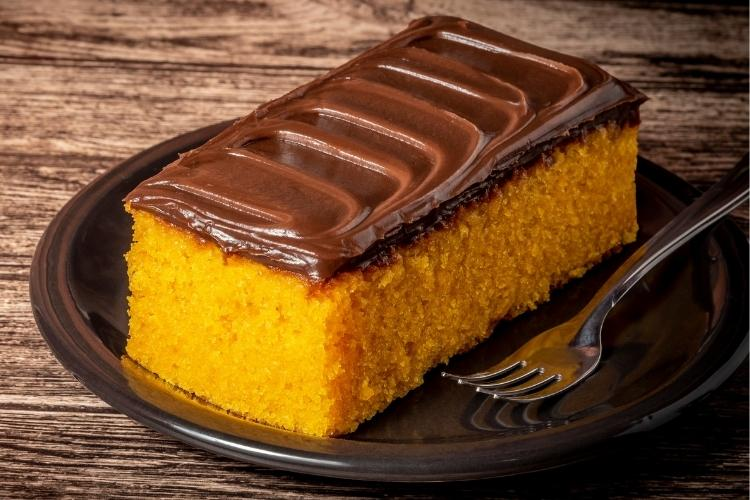

Início / Eventos e festas
Eventos e festas
Receitas para aniversário, ceia de Natal e almoço com a família reunida.
Aniversários
Doces para a mesa de festa.

Doces e sobremesas
Bolo de cenoura com cobertura de chocolate

Doces e sobremesas
Brigadeiro tradicional

Doces e sobremesas
Pudim de leite condensado

Doces e sobremesas
Cheesecake de Oreo
Natal e fim de ano
Receitas para a ceia.

Salgados
Salpicão de frango

Acompanhamentos
Farofa natalina

Doces e sobremesas
Rabanada tradicional

Salgados
Frango assado festivo
Almoços e encontros em família
Pratos para servir à mesa no fim de semana.